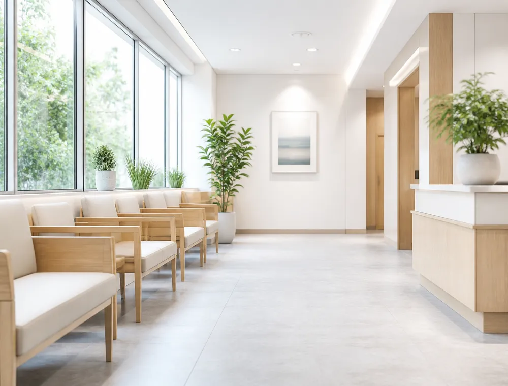
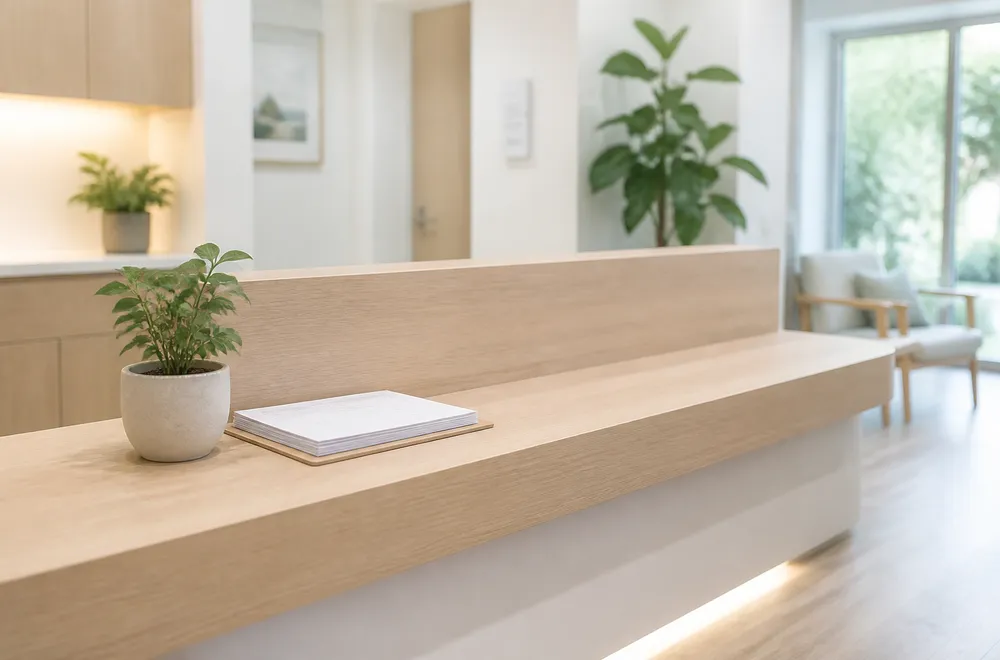
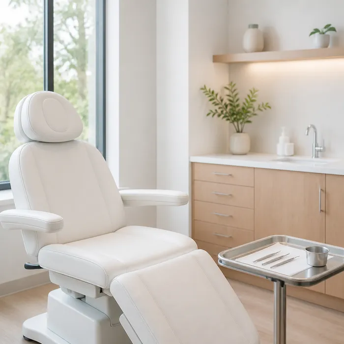
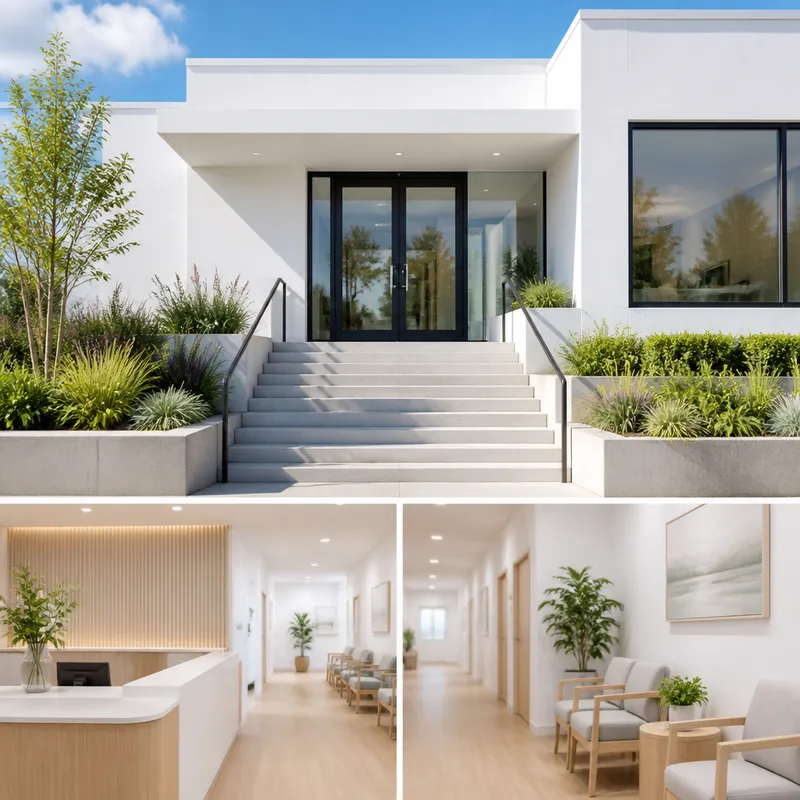

ABOUT US
当院について
青葉台のまちで、みみ・はな・のどのかかりつけ医として続けています。

GREETING
ごあいさつ
耳鼻咽喉科でお受けする相談は、ある日いきなり始まるものばかりではありません。少しずつ聞こえが遠くなる、においがぼやける、飲み込むときに引っかかる。毎日のことなので、体のほうが先に慣れてしまいます。
私たちは、その「慣れてしまった不便」を言葉にしてもらうところから診療を始めます。いつからか、どんなときに強いか、生活のどこで困っているか。それを伺ったうえで、必要な検査だけを選び、わかったことをその日のうちにお伝えします。
もうひとつ大切にしているのは、通いやすさです。お子さまを連れて来られる方、仕事の合間に立ち寄る方、ゆっくり歩いて来られる方。それぞれの事情に合わせて、次にいつ来ていただくかを一緒に決めます。
気になることがあれば、軽いうちにお立ち寄りください。まちの診療所として、長くおつきあいできればと思っています。
あおばクリニック 院長
POLICY
診療方針
-
01
今日わかったことを、今日お伝えする
診察と検査でわかった範囲を、その場で言葉にしてお渡しします。まだ判断できないことは「まだわからない」とお伝えし、次に何を確かめるかまで決めてから終わります。
-
02
つらい時間をできるだけ短くする
検査は必要なものだけを、手早く。お子さまの処置は事前に手順を説明し、一度に詰め込みません。途中で休みたいときは遠慮なくお伝えください。
-
03
通い続けられる形にする
次の来院日は、生活の予定を伺ってから決めます。学校や仕事の都合、送り迎えの時間まで含めて、無理のない間隔を一緒に組み立てます。
HISTORY
沿革
| 2016年 | 青葉台一丁目に耳鼻咽喉科の診療所として開院 |
|---|---|
| 2018年 | 防音の聴力検査室を増設 |
| 2020年 | 電子カルテとWeb予約の受付を開始 |
| 2022年 | 待合室を拡張し、キッズスペースを設置 |
| 2024年 | 近隣に第2駐車場を開設 |
| 2026年 | 院長交代にともないウェブサイトを刷新 |
FACILITY
院内案内
待合室はベビーカーのまま入れる広さに。
診察室は音が漏れにくい造りにしています。


